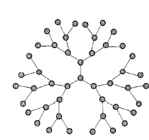

Date: 1/18/2026
I was developing a question about the modulus of gels as a function of the extent of reaction (and gel fraction) for the polymer physics class, namely because there lacked a good question on the polymer physics of rubbers, actually, but we did have a question on gels and I was trying to see if I could connect the two. We actually never got to section 7.4 when I took the class (and I never read this part of the textbook). This meant my approach to solving this problem was based on "effective strands" and not mean field scaling (well, it is mean field) or correlation lengths as R&C constructs the solution. But then I found section 7.4 and it offered a perspective of this problem through the lens of rubbers. As far as I can tell, both obtain the same result near the critical point, which makes this a really satisfying bridge between rubber theory and gelation theory. I am not sure if this whole discussion fits in the homework assignment (it doesn't, although I wish it did) but it was cool and as such I write it down. BTW, I am taking some screenshots from R&C but will keep this to a minimum
The mean field solution has a few assumptions (most of which fall from using a bethe lattice, i.e. no loops, not spacial correlations, etc). The bethe lattice looks like this:
